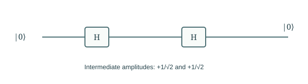
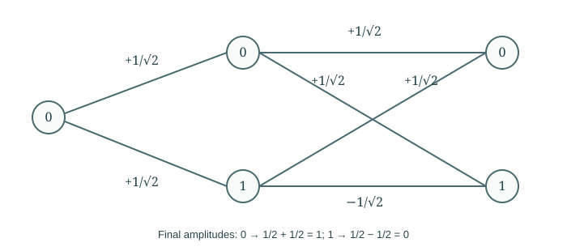

Chapter 03
Probability Amplitudes and Interference
The same single-step probabilities can conceal different behavior under composition. A two-state example shows why quantum predictions retain amplitudes, and why alternatives must be combined before outcome probabilities are calculated.
In this chapter · 4 sections · 12 topics
3.1
Classical Probability
A probability model specifies both the alternatives and how their weights combine.
3.1.1 Outcomes, distributions, and frequencies§
A classical bit has a value zero or one. If its preparation is uncertain, describe that uncertainty by probabilities \(p_0,p_1\geq0\) with \(p_0+p_1=1\). Repeating the same preparation independently gives outcome frequencies that tend toward these probabilities; a short sample need not match them exactly. The distribution describes uncertainty across outcomes, not a fraction of a bit observed in one trial. This distinction between a predictive description and an individual result remains important in quantum mechanics.
3.1.2 Conditional probability and path weights§
Suppose a transition has conditional probabilities \(P(j\mid i)\): the probability of next state j given current state i. The probability of a two-step path \(i\to j\to k\) is the product of its transition probabilities. To obtain the probability of reaching \(k\), sum over the disjoint intermediate alternatives: \[P(k\mid i)=\sum_j P(k\mid j)P(j\mid i),\] when the transition rule depends only on the current state. These are the product and sum rules for a Markov process. A fair randomizing step has every matrix entry \(1/2\); applying it twice still leaves a fair distribution.
3.1.3 Nondeterministic and probabilistic transitions§
A nondeterministic model records permitted successors, not likelihoods. A computation accepts if some permitted branch accepts. Branch weights can be written as zero or one, but their combination uses logical AND along a path and OR across paths. Two successful paths still mean “possible,” not probability two. A probabilistic model instead weights branches and asks how likely acceptance is. Keeping these meanings distinct prevents a common confusion: quantum amplitudes are neither a list of permitted classical guesses nor ordinary probabilities.
3.2
Quantum Transitions
We now compare coherent quantum composition with the two-state random model.
3.2.1 A two-state quantum transformation§
Consider the Hadamard transformation \[H=\frac1{\sqrt2}\begin{pmatrix}1&1\\1&-1\end{pmatrix}.\] For a definite input zero, it produces amplitudes \((1/\sqrt2,1/\sqrt2)^T\); input one gives \((1/\sqrt2,-1/\sqrt2)^T\). Measuring the output in the zero–one basis gives each outcome with probability one half, the squared magnitude of either entry. For now take these as the predictions of a quantum operation. The negative sign is invisible in this single measurement. The next calculation shows why it cannot be discarded from the state description.
3.2.2 Composition of transitions§
Matrix multiplication gives \(H^2=I\). Starting at zero, two successive Hadamards return zero with certainty. The fair randomizing classical step does not: its square is still a fair randomizer. The comparison assumes no measurement between the quantum steps. Inserting a measurement after the first Hadamard destroys the coherence needed for the certain return. We are not claiming that all classical devices lack hidden internal information; rather, a model that retains only the two outcome probabilities cannot reproduce this coherent composition.

3.2.3 Signed amplitudes and outcome probabilities§
Amplitudes combine before they are converted to probabilities. Two paths contributing \(+1/2\) and \(-1/2\) to the same final outcome sum to zero, hence give zero probability. Squaring each first would instead give \(1/4+1/4=1/2\), a different prediction. The order of operations matters: \[p(k)=\left|\sum_{\text{paths to }k}\text{path amplitude}\right|^2.\] This rule applies to alternatives that remain coherent. If a measurement or environment keeps a distinguishable record of the alternatives, we must include that record in the joint description rather than summing as if it were absent.
3.3
Path Interference
The path calculation makes the distinction between amplitudes and probabilities explicit.
3.3.1 Sum and product rules§
For two Hadamards with input zero, the path through intermediate zero contributes \(1/2\) to final zero, and the path through intermediate one contributes another \(1/2\). The final amplitude is one. For final one, the contributions are \(1/2\) and \(-1/2\), summing to zero. Thus both outcomes are accounted for, and the probabilities sum to one. This is matrix multiplication read as a path calculation: \((H^2)_{k0}=\sum_j H_{kj}H_{j0}\). The intermediate label is a bookkeeping basis, not necessarily an observed trajectory.

3.3.2 Constructive and destructive interference§
Constructive interference means contributions reinforce; destructive interference means they partly or completely cancel. Neither creates probability from nothing. A unitary transformation redistributes amplitudes while preserving their total squared magnitude. An algorithm must arrange reinforcement at useful outcomes and cancellation elsewhere. Merely creating many nonzero amplitudes does not accomplish this. The two-Hadamard example is small enough that every term can be inspected, but the same sum-of-products structure governs a register with many basis labels.
3.3.3 Path information and interference§
Write a state vector as a ket, \(\ket r\); the overlap of two vectors is written \(\braket{r_0}{r_1}\). If the two intermediate alternatives leave orthogonal records \(\ket{r_0}\) and \(\ket{r_1}\), the final amplitude contributions are attached to different joint states. Their squared norms add rather than cancel. More generally, the interference term is proportional to the overlap \(\braket{r_0}{r_1}\). Identical records preserve full interference; orthogonal records remove it from the unobserved-register statistics. Chapter 5 develops these joint states. For now the practical lesson is that information left elsewhere matters even when nobody reads it. Observation by a conscious observer is not required.
3.4
Complex Amplitudes
Complex coordinates extend signs to phases while preserving the same composition rules.
3.4.1 Relative and global phase§
A sign is a special case of phase. Write an amplitude as \(re^{i\phi}\), where \(r\geq0\) is its magnitude. Its outcome probability is \(r^2\). Multiplying every amplitude by the same phase changes no prediction: it is a global phase. Changing one amplitude’s phase relative to another can alter interference. For example, \((\ket0+e^{i\phi}\ket1)/\sqrt2\) gives equal zero–one probabilities for every \(\phi\), but a subsequent Hadamard gives zero with probability \((1+\cos\phi)/2\).
3.4.2 Complex numbers and phase representation§
The complex number \(i\) satisfies \(i^2=-1\). For \(z=a+ib\), its conjugate is \(z^*=a-ib\), and \(|z|^2=z^*z=a^2+b^2\). Complex addition combines directed contributions in a plane; multiplication multiplies magnitudes and adds phases. This makes complex numbers convenient for coherent path weights. Conjugation matters because probabilities must be real and nonnegative: squaring \(i/\sqrt2\) gives \(-1/2\), whereas its squared magnitude is \(1/2\).
3.4.3 State vectors and transition matrices§
Choose an ordering of outcomes and collect amplitudes in a column \(\psi\). Put the amplitude for \(i\to j\) in matrix entry \(U_{ji}\): column \(i\) is the result of the transformation on basis input \(i\). Then \(\psi'=U\psi\), and successive steps give \(VU\psi\), with the rightmost operation acting first. The matrix is a compact description of the same path rules. Quantum states require normalization and physical transformations require additional constraints; the next chapter states those requirements and relates coordinates to measurements.